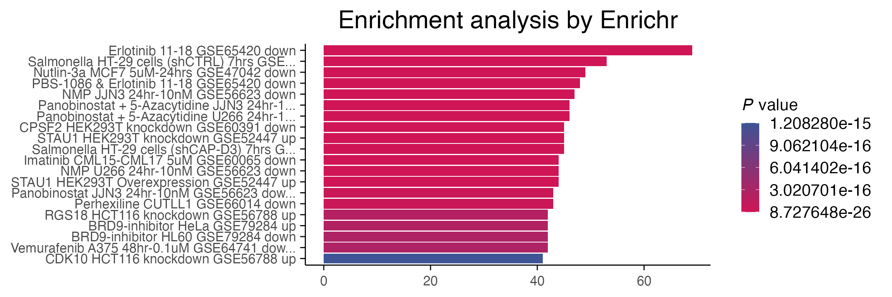
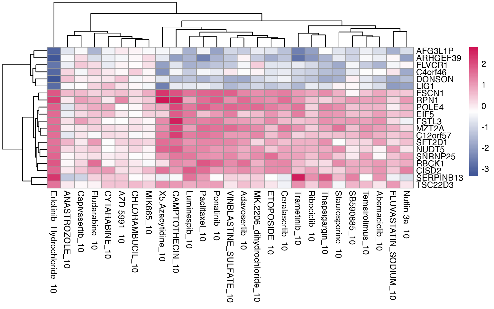
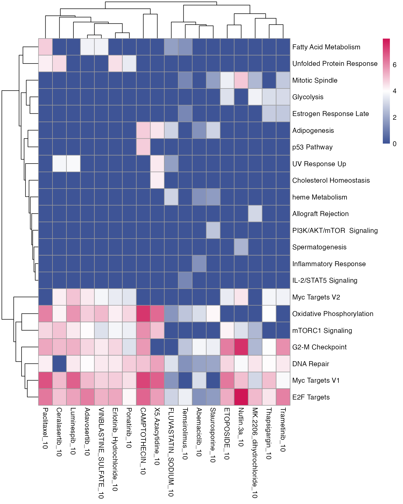
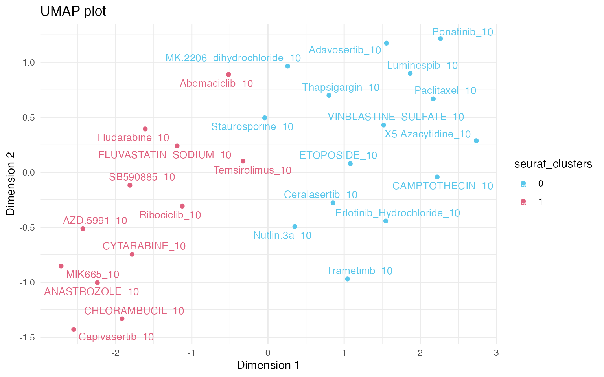
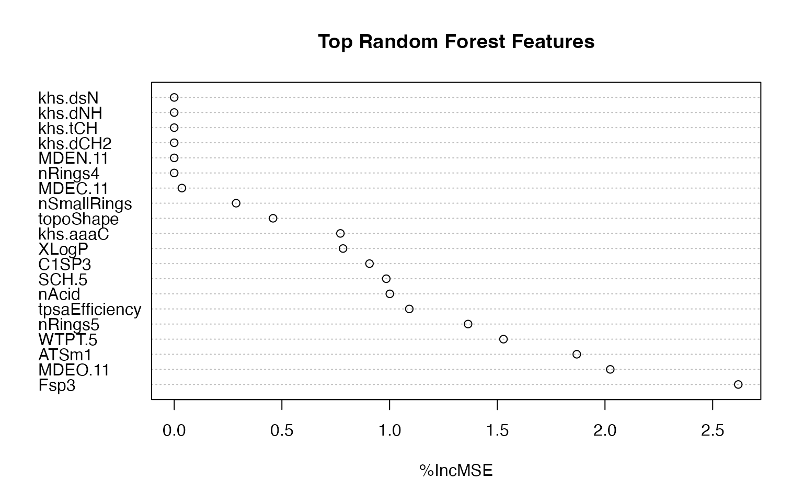

This vignette demonstrates how to use the
macpie package for analysing data from
high-throughput transcriptomic (HTTr) screens. It showcases workflows
how to identify biological or chemical perturbations in expression
profiles across whole plates. Additionally, it describes a set of tools
for compound screening: from calculating EC50s of genes and pathways to
extraction of filtering of chemical descriptors associated with
transcriptional profiles.
Key points:
- compute differential expression of the whole screen vs control
samples in parallel with
compute_multi_de - visualise expression of sets of genes in a screen with
plot_multi_de - assess pathway enrichment across the screen with
compute_multi_enrichr - visualise and cluster profiles with UMAP of DE signatures with
plot_de_umap - rank expression profiles based on similarity to a gene set with
compute_multi_screen_profile
- model compound potency with dose–response curves for genes and
pathways using
compute_single_dose_response()
- Add chemical descriptors with
compute_smiles()andcompute_chem_descriptors()to identify key molecular features responsible for transcriptional profiles
1. Data import
First import data by providing either a directory, or a vector of directories (for multiple plates) to the Read10X function, as described in the previous vignettes, such as Quality control.
2. Single perturbation
While using “MSigDB_Hallmark_2020” is a standard choice in pathway
enrichment, there are a number of gene sets that are available through
enrichR that might be more relevant for screens, such as
“RNA-Seq_Disease_Gene_and_Drug_Signatures_from_GEO”, or even cell and
direction specific ones such as “MCF7_Perturbations_from_GEO_down”. The
full list is available with listEnrichrDbs(). In the
following example, we investigate which compounds have similar profile
to Erlotinib (SN02373723), to showcase that the profile can be confirmed
through public datasets, even in a different cell line (lung
adencarcinoma, (GSE65420).
# First perform the differential expression analysis
treatment_samples <- "Erlotinib_Hydrochloride_10"
control_samples <- "DMSO_0"
top_table <- compute_single_de(mac, treatment_samples, control_samples, method = "limma_voom")
top_genes <- top_table %>%
filter(p_value_adj < 0.01) %>%
select(gene) %>%
pull()
# Perform enrichment analysis. Warning, you will require internet access to use EnrichR
enriched <- enrichR::enrichr(top_genes, c("RNA-Seq_Disease_Gene_and_Drug_Signatures_from_GEO"))
#> Uploading data to Enrichr... Done.
#> Querying RNA-Seq_Disease_Gene_and_Drug_Signatures_from_GEO... Done.
#> Parsing results... Done.
p1 <- enrichR::plotEnrich(enriched[[1]]) +
macpie_theme(legend_position_ = 'right') +
scale_fill_gradientn(colors = macpie_colours$divergent)
p1
3. Screen-level analyses
In high-throughput screens we commonly want to compare multiple samples against the control in parallel. First we select a vector of perturbations, in our case “combined_ids” that do not contain the term “DMSO”.
treatments <- mac %>%
filter(Concentration_1 == 10) %>%
select(combined_id) %>%
filter(!grepl("DMSO", combined_id)) %>%
pull() %>%
unique()
mac <- compute_multi_de(mac, treatments, control_samples = "DMSO_0", method = "limma_voom", num_cores = 1)3.1 Expression profiles of individual genes
We will visualise logFC expression of top 20 genes from the Erlotinib
(SN02373723) DE analysis across the screen with
plot_multi_de.
plot_multi_de(mac, group_by = "combined_id", value = "log2FC", p_value_cutoff = 0.01, direction="up", control = "DMSO_0", by="fc", gene_list = head(top_genes, 20))
3.2 Pathway enrichment
Similarly, we can observe which gene sets, either provided by the user or publicly available, are shared across the treatments, and which are specific for individual perturbations.
# Load genesets from enrichr for a specific species or define your own
enrichr_genesets <- download_geneset("human", "MSigDB_Hallmark_2020")
mac <- compute_multi_enrichr(mac, genesets = enrichr_genesets)
enriched_pathways_mat <- mac@tools$pathway_enrichment %>%
bind_rows() %>%
group_by(combined_id) %>%
slice_max(order_by = Combined.Score, n = 8, with_ties = FALSE) %>% # Select top 10 per group
ungroup() %>%
select(combined_id, Term, Combined.Score) %>%
pivot_wider(names_from = combined_id, values_from = Combined.Score) %>%
column_to_rownames(var = "Term") %>%
mutate(across(everything(), ~ ifelse(is.na(.), 0, log1p(.)))) %>%
as.matrix()
pheatmap(enriched_pathways_mat, color = macpie_colours$continuous_rev)
3.3 Clustering of expression profiles
UMAP dimensionality reduction is commonly used to visualise
clustering of samples according to their expression profiles. Instead of
using individual replicates for UMAP, we can cluster based on the
statistical metric for differential gene expression vs control, which
allows more control over the batch-correction of data and reduction of
replicate noise. Function aggregate_by_de
creates a new Seurat object, collapsing the metadata across the
replicates.
mac_agg <- aggregate_by_de(mac)
mac_agg <- compute_de_umap(mac_agg)
mac_agg <- FindNeighbors(mac_agg, reduction = "umap_de", dims = 1:2, verbose = FALSE)
# This command creates a column "seurat_clusters"
mac_agg <- FindClusters(mac_agg, resolution = 1.1, verbose = FALSE)
# Plot a umap
plot_de_umap(mac_agg, color_by = "seurat_clusters")
A number of analyses then become available, including plotting of biological signatures on UMAP plots.
# Perform AUCell analysis
cells_rankings <- AUCell_buildRankings(
GetAssayData(mac_agg), plotStats = FALSE)
cells_AUC <- AUCell_calcAUC(enrichr_genesets, cells_rankings, verbose = FALSE)
# Add AUCell results to the original object
auc_df <- getAUC(cells_AUC) %>%
t() %>%
as.data.frame() %>%
tibble::rownames_to_column(".cell")
mac_agg <- mac_agg %>%
left_join(auc_df,by = ".cell")
# We can then plot by any of the pathways, for example:
p <- plot_de_umap(mac_agg, color_by = "Oxidative Phosphorylation")
girafe(ggobj = p,
fonts = list(sans = "sans"),
options = list(
opts_hover(css = "stroke:black; stroke-width:0.8px;") # <- slight darkening
))3.4 Similarity to a known profile
Additionally, when performing a screen, sometimes we want to measure similarity to either an existing profile, or to a user-defined gene-set that defines a desired phenotype.
mac_agg <- compute_multi_screen_profile(mac_agg, target = "Staurosporine_10", num_cores = 1)
p <- plot_multi_screen_profile(mac_agg, color_by = "seurat_clusters")
girafe(ggobj = p,
fonts = list(sans = "sans"),
options = list(
opts_hover(css = "stroke:black; stroke-width:0.8px;") # <- slight darkening
))Similarly, we can compare enrichments of a known gene set.
enrichr_genesets <- download_geneset("human", "MSigDB_Hallmark_2020")
mac_agg <- compute_multi_screen_profile(mac_agg, geneset = enrichr_genesets[["Oxidative Phosphorylation"]])
p <- plot_multi_screen_profile(mac_agg, color_by = "seurat_clusters")
girafe(ggobj = p,
fonts = list(sans = "sans"),
options = list(
opts_hover(css = "stroke:black; stroke-width:0.8px;") # <- slight darkening
))4. Estimate of dose-response
macpie can be used to calculate
dose-response curves for individual genes, pathways or any other
external measurement such as cell viability that is available in your
metadata, based on the R package drc These are also available in
a paralelisable format with the function
“compute_multiple_dose_response”.
enrichr_genesets <- download_geneset("human", "MSigDB_Hallmark_2020")
# Note that we are not using the aggregated object, since we need replicates
mac <- compute_multi_enrichr(mac, genesets = enrichr_genesets)
res <- compute_single_dose_response(data = mac,
gene = "EIF2B5",
normalisation = "limma_voom",
treatment_value = "Staurosporine")
#>
#> Estimated effective doses
#>
#> Estimate Std. Error Lower Upper
#> e:1:50 2.0412 6.5744 -11.5277 15.6101
# All of the properties
res$plot
res <- compute_single_dose_response(data = mac,
pathway = "Myc Targets V1",
treatment_value = "CAMPTOTHECIN")
#>
#> Estimated effective doses
#>
#> Estimate Std. Error Lower Upper
#> e:1:50 4.6533 10.0000 NaN NaN
res$plot
4. Working with chemical descriptors
macpie provides an easy way to find
smiles from compounds names, compute chemical descriptors of the
compounds and identify those that are most important for the
phenotype.
In the example below, the Wiener path number, representing the overall branching of the molecule is the most important for targeting the estrogen activity, as measured by percentage increase in Mean Squared Error (%IncMSE).
# Add smiles based on a column with generic names of compounds
#(warning, this process requires internet connection and can take a while)
#mac <- compute_smiles(mac, compound_column = "Compound_ID")
#
## Calculate descriptors
mac <- compute_chem_descriptors(mac)
#change column names for joining
colnames(mac@tools$chem_descriptors)[1] <- "combined_id"
# Join with target variable (e.g. pathway score)
model_df <- mac@tools$pathway_enrichment %>%
filter(Term == "Estrogen Response Early") %>%
left_join(., mac@meta.data, join_by(combined_id)) %>%
filter(Concentration_1 == 10) %>%
select(Treatment_1, Combined.Score, combined_id) %>%
unique() %>%
left_join(., mac@tools$chem_descriptors, join_by(combined_id)) %>%
select(-combined_id) %>%
drop_na()
# Train random forest
rf_model <- randomForest(Combined.Score ~ ., data = model_df, importance = TRUE, na.action = na.omit)
# Get importance scores
rf_importance <- importance(rf_model, type = 1) # %IncMSE = predictive power
rf_ranked <- sort(rf_importance[, 1], decreasing = TRUE)
# Top 20 important descriptors
head(rf_ranked, 20)
#> Fsp3 MDEO.11 ATSm1 WTPT.5 nRings5
#> 2.61882136 2.02448505 1.86901073 1.52871682 1.36434306
#> tpsaEfficiency nAcid SCH.5 C1SP3 XLogP
#> 1.09144808 1.00100150 0.98454638 0.90667258 0.78385517
#> khs.aaaC topoShape nSmallRings MDEC.11 nRings4
#> 0.77161789 0.45889299 0.28752283 0.03567346 0.00000000
#> MDEN.11 khs.dCH2 khs.tCH khs.dNH khs.dsN
#> 0.00000000 0.00000000 0.00000000 0.00000000 0.00000000
#> WTPT.2 nRings5 MDEC.11 nRings7 MDEO.22 MDEO.11
#> 3.361393653 2.150421361 1.214784237 1.001001503 0.783327367 0.709299485
#> khs.ssCH2 nSmallRings MDEN.33 MDEC.14 topoShape ALogp2
#> 0.474955644 0.366086694 0.115293479 0.085759728 0.077678537 0.007617685
#> nRings4 MDEN.11 khs.dCH2 khs.tCH khs.dNH khs.aaNH
#> 0.000000000 0.000000000 0.000000000 0.000000000 0.000000000 0.000000000
#> khs.dsN khs.aaO
#> 0.000000000 0.000000000
#>
rf_importance_clean <- rf_importance %>%
as.data.frame() %>%
rownames_to_column("Feature") %>%
filter(is.finite(`%IncMSE`)) %>%
arrange(desc(`%IncMSE`))
top_n <- min(20, nrow(rf_importance_clean))
dotchart(
rf_importance_clean$`%IncMSE`[1:top_n],
labels = rf_importance_clean$Feature[1:top_n],
main = "Top Random Forest Features",
xlab = "%IncMSE"
)